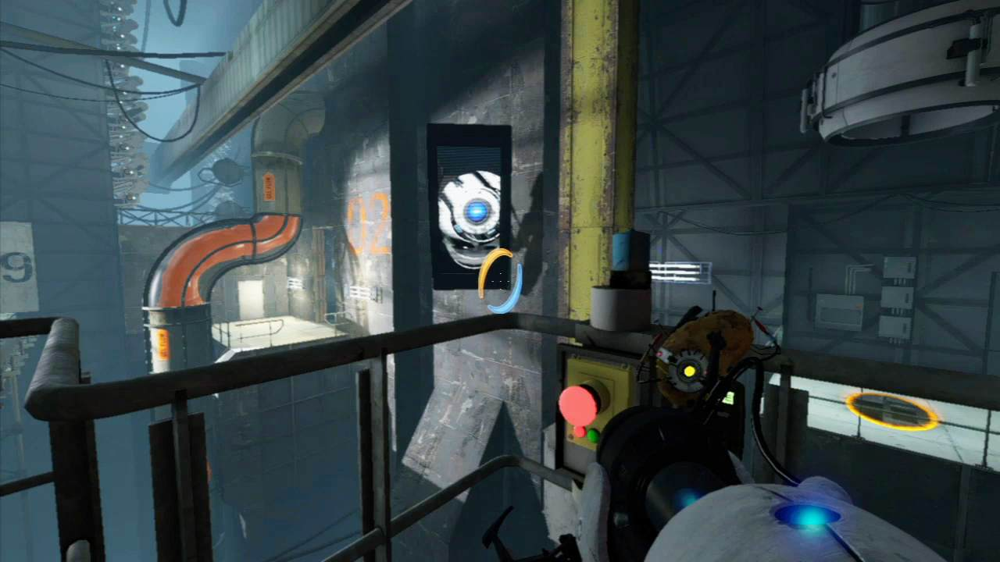

Portal is a puzzle-platform video game developed and published by Valve Corporation. It was released
in a bundle package called The Orange Box for Microsoft Windows, Xbox 360 and PlayStation 3 in 2007.
The game has since been ported to other systems, including OS X, Linux, and Android.
Portal consists primarily of a series of puzzles that must be solved by teleporting the player's
character and simple objects using "the Aperture Science Handheld Portal Device", a device that
can create inter-spatial portals between two flat planes. The player-character, Chell, is challenged
and taunted by an artificial intelligence named GLaDOS (Genetic Lifeform and Disk Operating System)
to complete each puzzle in the Aperture Science Enrichment Center using the portal gun with the promise
of receiving cake when all the puzzles are completed. The game's unique physics allows kinetic energy
to be retained through portals, requiring creative use of portals to maneuver through the test chambers.
This gameplay element is based on a similar concept from the game Narbacular Drop; many of the team members
from the DigiPen Institute of Technology who worked on Narbacular Drop were hired by Valve for the creation
of Portal, making it a spiritual successor to the game.
Portal was acclaimed as one of the most original games of 2007, despite criticisms of its short
duration and limited story. The game received praise for its originality, unique gameplay and dark
story with a humorous series of dialogue. GLaDOS, voiced by Ellen McLain in the English-language
version, received acclaim for her unique characterization, and the end credits song "Still Alive",
written by Jonathan Coulton for the game, was acclaimed for its original composition and humorous twist.
Excluding Steam download sales, over four million copies of the game have been sold since its release,
spawning official merchandise from Valve including plush Companion Cubes, as well as fan recreations of
the cake and portal gun, a standalone version, titled Portal: Still Alive, on the Xbox Live Arcade service
in October 2008, which added an additional 14 puzzles to the gameplay, and a sequel, Portal 2, which was released
in 2011, adding several new gameplay mechanics and a cooperative multiplayer mode.
 In Portal, the player controls the protagonist, Chell, from a first-person perspective as she is challenged to navigate through a series of rooms using the Aperture Science Handheld Portal Device, or portal gun, under the watchful supervision of the artificial intelligence GLaDOS. The portal gun can create two distinct portal ends, orange and blue. The portals create a visual and physical connection between two different locations in three-dimensional space. Neither end is specifically an entrance or exit; all objects that travel through one portal will exit through the other. An important aspect of the game's physics is momentum redirection. As moving objects pass through portals, they come through the exit portal at the same direction that the exit portal is facing and with the same speed with which they passed through the entrance portal. For example, a common maneuver is to jump down to a portal on the floor and emerge through a wall, flying over a gap or another obstacle. This allows the player to launch objects or Chell over great distances, both vertically and horizontally, referred to as 'flinging' by Valve.[5] As GLaDOS puts it, "In layman's terms: speedy thing goes in, speedy thing comes out." If portal ends are not on parallel planes, the character passing through is reoriented to be upright with respect to gravity after leaving a portal end. (More Informations)
TPortal received critical acclaim, often earning more praise than either Half-Life 2: Episode Two or Team Fortress 2, two titles also included in The Orange Box. It was praised for its unique gameplay and dark, deadpan humor. Eurogamer cited that "the way the game progresses from being a simple set of perfunctory tasks to a full-on part of the Half-Life story is absolute genius", while GameSpy noted, "What Portal lacks in length, it more than makes up for in exhilaration." The game was criticized for sparse environments, and both criticized and praised for its short length. Aggregate reviews for the stand-alone PC version of Portal gave the game a 90/100 through 28 reviews on Metacritic.In 2011, Valve stated that Portal had sold more than four million copies through the retail versions, including the standalone game and The Orange Box, and from the Xbox Live Arcade version.he game generated a fan following for the Weighted Companion Cube even though the cube itself does not talk or act in the game. Fans have created plush and papercraft versions of the cube and the various turrets,[81] as well as PC case mods and models of the Portal cake and portal gun. Jeep Barnett, a programmer for Portal, noted that players have told Valve that they had found it more emotional to incinerate the Weighted Companion Cube than to harm one of the "Little Sisters" from BioShock. Both GLaDOS and the Weighted Companion Cube were nominated for the Best New Character Award on G4, with GLaDOS winning the award for "having lines that will be quoted by gamers for years to come.(More Informations)
| Aggregate score | |
|---|---|
| Aggregate score | Score |
| Metacritic | 90/100 |
| Review scores | |
| Publication | Score |
| 1UP.com | A |
| Eurogamer | 9/10 |
| GameSpot | 9.0/10 |
| GameSpy | 4.5/5.0 |
| IGN | 8.2/10 |